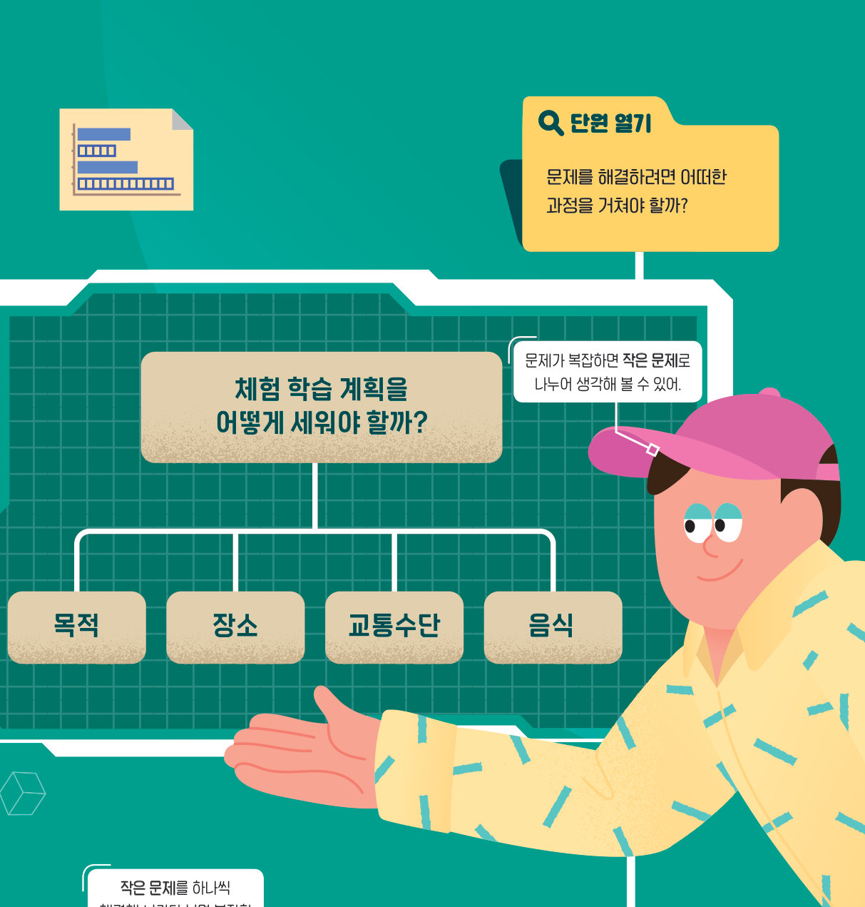
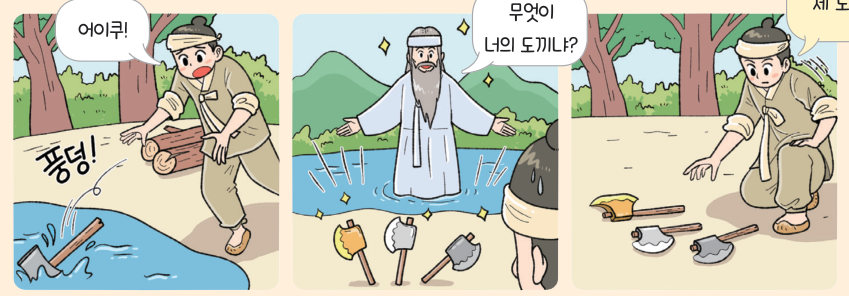

프로그래밍 단원의 핵심 개념을 다시 정리하고, 인공지능 음악과 저작권을 생각해 본 뒤, 동화를 각색한 피지컬 컴퓨팅 애니메이션을 설계하고 단원 평가로 Ⅲ단원을 마무리하자.
| 평가 기준 | 스스로 평가 |
|---|---|
| 컴퓨팅 사고력 데이터를 순차적으로 저장할 수 있는 구조, 논리 연산과 중첩 제어 구조를 활용하여 문제 해결 프로그램을 작성할 수 있는가? | |
| 함수를 활용하여 프로그램을 작성하고, 프로그램의 수행 결과를 관찰하여 오류를 수정할 수 있는가? | |
| 실생활 문제를 탐색하여 프로그래밍으로 효과적으로 해결하는 과정을 수행할 수 있는가? | |
| 다양한 학문 분야에서 문제 해결을 위한 소프트웨어를 협력하여 개발하는 활동을 수행할 수 있는가? |
최근 몇 년 동안 인공지능 기술의 급격한 성장으로 음악 창작과 이해의 경계가 무너지고 있다. 인공지능은 엄청난 양의 음악 데이터를 신속하게 학습하기 때문에 학습된 지식과 생성 모델을 이용하면 누구나 음악을 만들 수 있게 되었다. 이러한 모델은 음악의 패턴과 구조를 깊이 이해하여 음악을 생성한다.
인공지능이 짧은 시간에 많은 음악을 생성하면서 중복된 음악이 생길 가능성이 있고, 이로 인해 표절과 같은 저작권 문제도 생겨나고 있다. 인공지능으로 생성된 곡을 식별하고 표절 기준을 설정하는 시스템이 필요한 시점이다.

| 평가 기준 | 스스로 평가 |
|---|---|
| 지식·이해 문제 해결에 필요한 피지컬 컴퓨팅 시스템을 설계하고 구현할 수 있는가? | |
| 가치·태도 구현한 피지컬 컴퓨팅 시스템이 실제 생활에 필요하며, 가치가 있는지를 판단할 수 있는가? |
| 01 문제의 목적에 따라 필요한 요소를 찾아내고 작은 문제로 나누어 해결 가능한 수준으로 만드는 것을 구조화라고 한다. | |
| 02 알고리즘은 자연어, 순서도 등 여러 가지 방법으로 표현할 수 있다. | |
| 03 여러 개의 데이터를 순차적으로 저장할 수 있는 저장 장소를 변수라고 한다. | |
| 04 특정 작업을 수행하기 위해 모아 놓은 프로그램 코드의 집합을 함수라고 한다. | |
| 05 프로그램의 오류를 찾아낼 때 사용하는 프로그램을 버그라고 한다. |